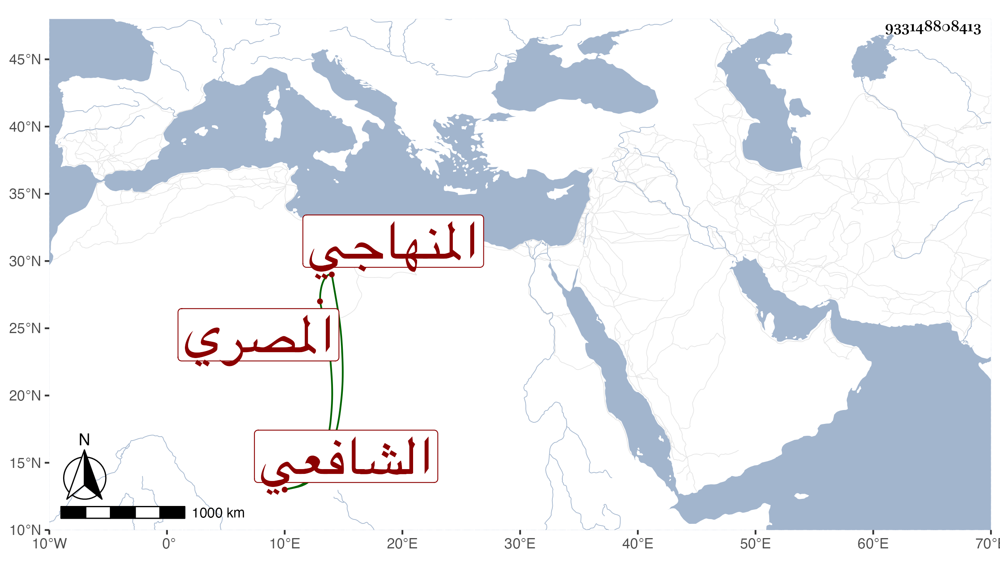

0902Sakhawi.DawLamic.ITO20230111-ara1.EIS1600.933148808413
Biography ID: 933148808413
36
محمد بن أحمد بن علي بن محمد أمين الدين المصري الشافعي المنهاجي سبط الشمس بن اللبان . ولد سنة بضع وثلاثين وسبعمائة وحفظ القرآن والتنبيه وغيره واشتغل بالعلم وأسمع على ابن عبد الهادي في صحيح مسلم وعلى جده لأمه وكان معه عدة جهات من الأوقاف الجكمية يباشر فيها وانقطع إلى الصدر المناوى فاشتهر بصحبته وصارت له وجاهة ، ثم تعانى التجارة واتخذ له مطبخ سكر وكثر ماله : مات في رمضان سنة ست . ذكره شيخنا في إنبائه وقال سمعت منه قليلا ، وتبعه المقريزي في عقوده وأنه ولد سنة اثنتين وأربعين وسبعمائة .
